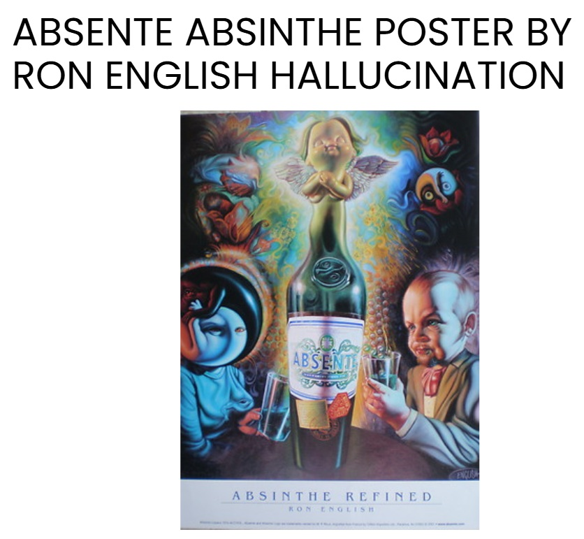
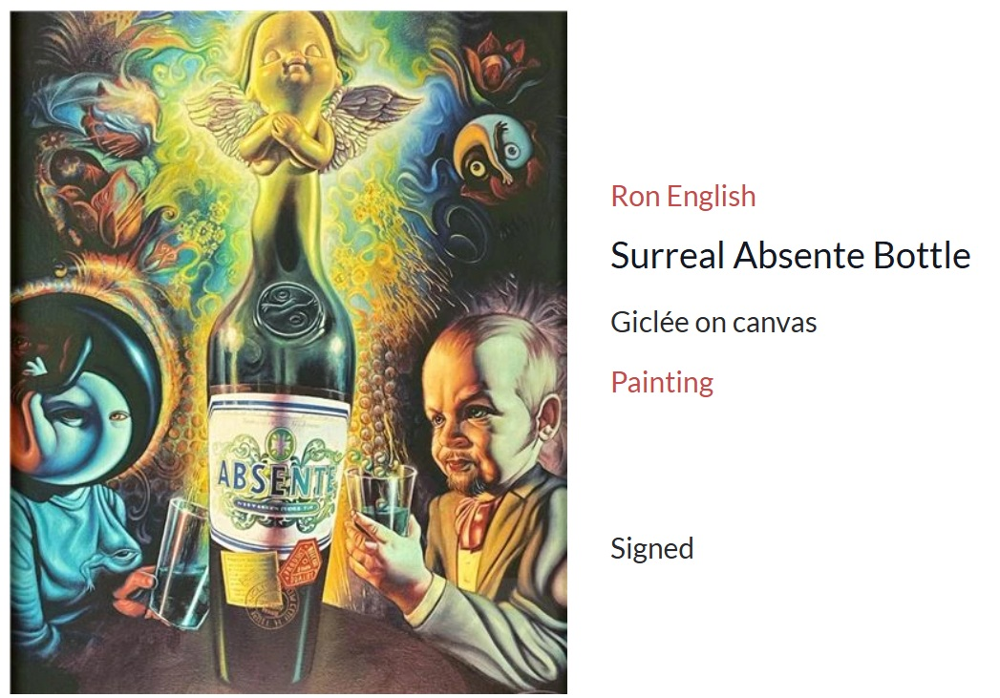

Exhibitions
Ron English Exhibition, Arte Vista The Pop-Art Gallery, Badhoevedorp, Netherlands, March 27–28, 2005.
Literature
Ron English, Popaganda: The Art & Subversion of Ron English (San Francisco: Last Gasp, 2001), p. 152. ISBN 1-887128-60-3.
Ron English, Son of Pop: Ron English Paints His Progeny (San Francisco, California: 9mm Books and The Shooting Gallery, 2007), p. 31. ISBN 978-0-9766325-1-1.
Notes
This work appears in a promotional invitation / advertisement for Ron English Exhibition, Arte Vista The Pop-Art Gallery. Source unidentified; preserved in archive.
In Son of Pop, this work was erroneously reported as 48 × 36 inches.
A poster reproducing this image appears on WorthPoint’s archived page for Absente Absinthe Refined Poster “Hallucination” by Ron English.
MutualArt documents a related object under the title Surreal Absente Bottle.
Ancillary Documentation
The following materials document exhibition promotion, poster reproduction, and related online artwork documentation connected to the work.


